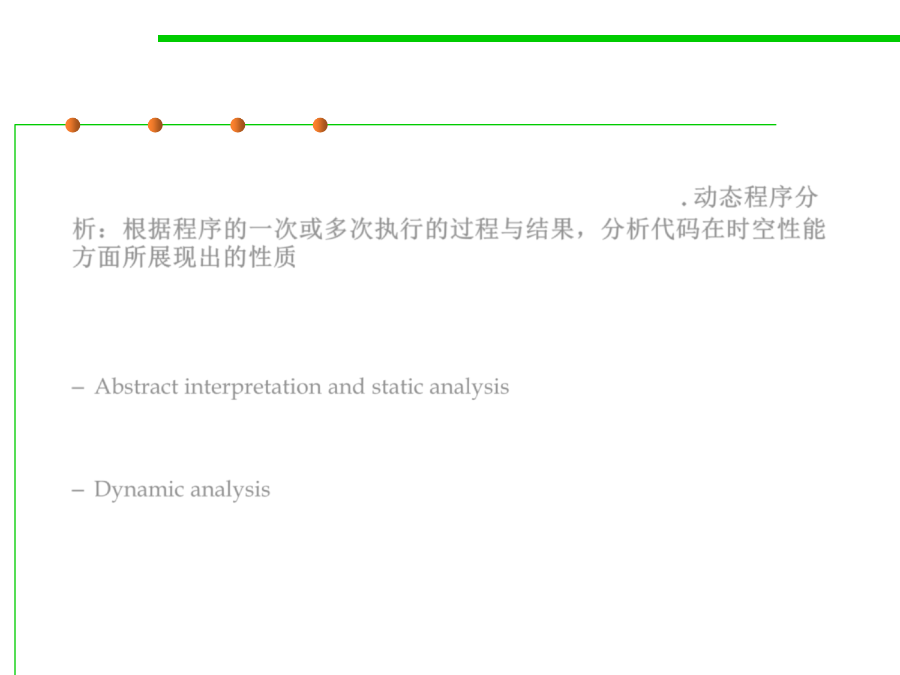

8.2 Dynamic Program Analysis Methods and Tools
Dynamic Program Analysis
▪ Dynamic analysis is the investigation of the properties of a
running software system over one or more executions. 动态程序分
析：根据程序的一次或多次执行的过程与结果，分析代码在时空性能
方面所展现出的性质
▪ What is the meaning of “run”?
– Abstract interpretation and static analysis “run” a program over an
abstract domain
OUT=F(IN,s)
– Dynamic analysis abstraction used in parallel with, not in place of,
concrete values
OUT=F(IN,si,v)